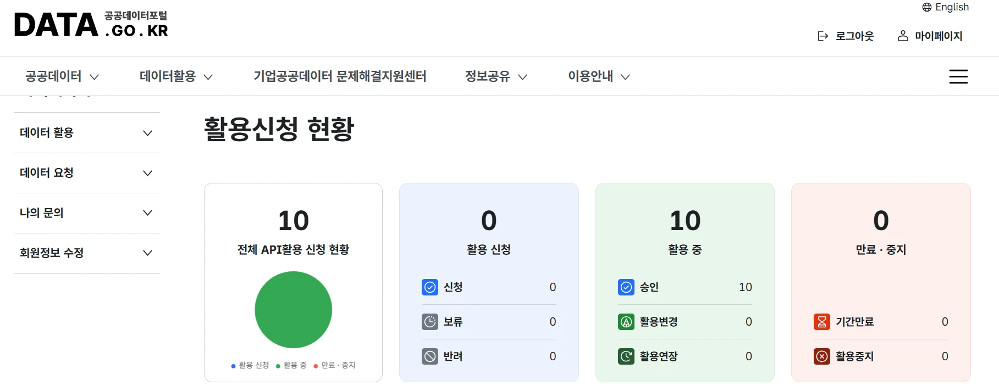
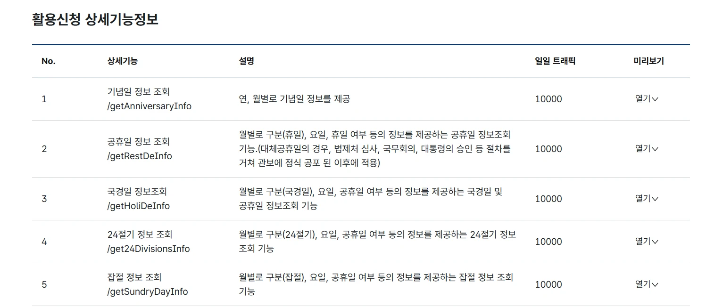
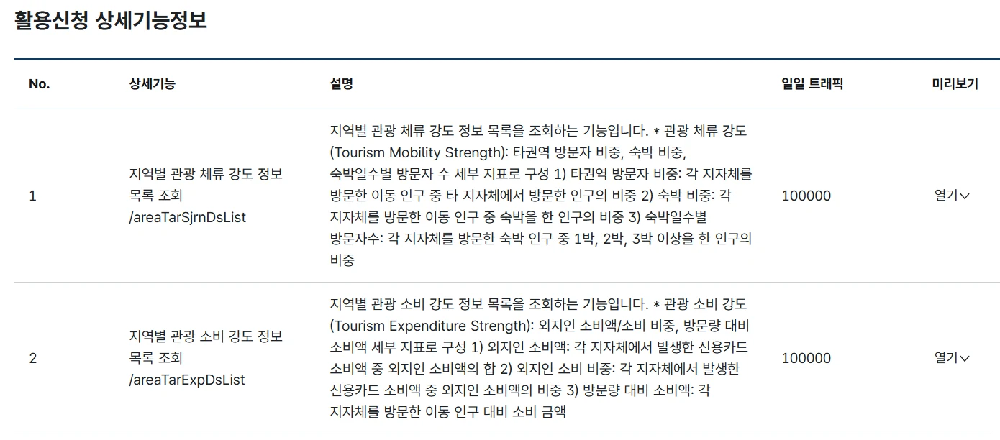
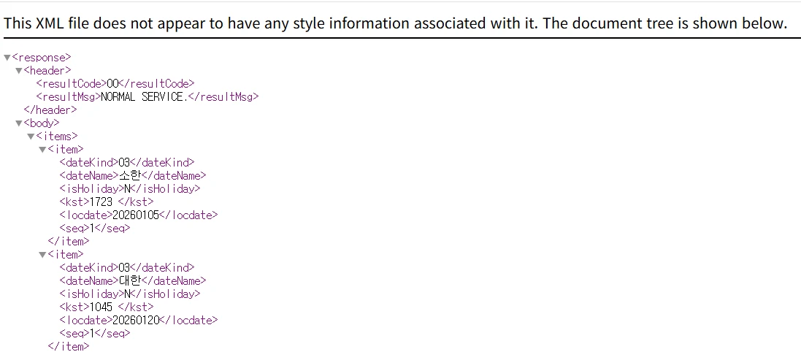

공공데이터 활용 + API 입문
공공데이터로
우리 동네 읽기
파일로 받아서 비교해 보고, API로 불러서 지금 값을 확인해 봐요.
같은 공공데이터인데 가져오는 길이 달라요.
휴대폰 카메라로 비추거나 주소를 입력하세요
시작하기
오늘은 이 순서로 가요
준비물
- 노트북 (크롬 브라우저)
- 공공데이터포털 회원가입과 이메일 인증
- 인터넷 연결
개념 · 공공데이터
우리가 쓰는 앱 속 정보는 어디서 올까?
날씨 앱, 지도 앱, 버스 앱 속 정보 가운데 상당수는 나라와 지자체, 공공기관이 모아 둔 자료예요. 그 자료를 누구나 가져다 쓸 수 있게 열어 둔 것이 공공데이터예요.
이런 것들이 공공데이터가 될 수 있어요
사례 · 이미 쓰이고 있어요
공공데이터로 만든 서비스들
세 곳 모두 공공데이터에서 시작했어요. 그런데 데이터를 가져다 쓰는 방식은 서로 달라요.
휴대폰 카메라로 QR 코드를 비춰 보세요.
QR이 실제로 열리는지 수업 전에 폰으로 한 번 확인하세요. 그늘로는 건물·가로수 같은 정적 공간데이터에 계산을 더한 사례, 식당 지도는 공개 기록물을 가공한 사례, 시즌로드는 실시간 API 사례예요. 20번 슬라이드에서 다시 짚을 수 있어요.신청 먼저 · 포털 둘러보기
공공데이터는 여기서 찾아요
개념 · 가져다 쓰는 방법
공공데이터는 여러 갈래, 성격이 달라요
필요한 데이터가 어디에 있느냐에 따라 가져오는 방법이 달라요. 네 가지를 눌러서 비교해 보세요. 오늘은 파일 다운로드와 Open API 두 갈래를 직접 해 봐요.
| 방법 | 어디서 | 인증키 | 데이터가 바뀌나요? |
|---|
신청 먼저 · 활용신청
활용신청하고 인증키 받기
활용신청 입력 화면과 인증키 발급현황
- 활용신청 화면의 활용 목적 입력 칸
- 마이페이지의 인증키 발급현황 목록
활용 목적 문구 예시
공공데이터 활용 교육 수업에서 Open API 연동 방법을 익히고, 경기도 버스 도착 정보를 조회해 보는 실습용으로 활용합니다.
내 상황에 맞게 고쳐서 써요.
신청 먼저 · 승인 확인
"활용 중"이면 승인된 거예요

일일 트래픽은 하루에 부를 수 있는 횟수예요
상세 페이지의 일일 트래픽 칸에서 볼 수 있어요. 서비스마다 한도가 달라요. 한도를 넘으면 그날은 더 받을 수 없어요.


파일 갈래 실습
우리 동네는 경기도 안에서 어떨까?
경기도 31개 시군의 범죄 통계를 파일로 받아서 비교해 봐요. 건수만 보면 큰 도시가 늘 위에 있어요. 그래서 인구 1만 명당으로 바꿔 볼 거예요.
파일 갈래 · STEP 1
범죄 통계 파일 내려받기
경찰청 범죄 발생 지역별 통계 (CSV)
- 검색 결과에서 이름에 지역별이 들어 있는 파일데이터를 골라요
- 다운로드 버튼으로 받고, CSV 파일은 열어서 고치지 않아요
맨 위 줄에
범죄대분류, 범죄중분류가 있고, 옆으로 경기도 김포시 같은 지역 이름이 가로로 줄지어 있어요.장소별 통계는 가로에 아파트, 편의점 같은 장소가 있어요. 지역 이름이 없어서 우리 동네를 찾을 수 없어요.파일 갈래 · STEP 2
인구 파일 내려받기
도시지역 인구현황(시군구) · 국가통계포털 KOSIS
- 조회 설정에서 시점은 가장 최근 연도(2025), 지역은 경기도의 시군을 모두 골라요
- 다운로드는 엑셀(xlsx)로 받아요. 이 표에서는 전체인구 열을 써요
단위가
명이고, 경기도 아래에 수원시, 성남시처럼 시군 이름이 한 줄씩 있어요.이름에
세대수가 들어 있으면 사람 수가 아니라 가구 수예요. 서울, 경기도처럼 시도까지만 나오는 표는 시군이 없어서 비교할 수 없어요.파일 갈래 실습
우리 동네 범죄 비교
받은 두 파일을 넣거나, 파일이 없으면 "예시 데이터로 해 보기"를 눌러요.
이 슬라이드가 실습 시간의 중심이에요. 시간을 늘리고 줄이는 칸으로 쓰세요. iframe 안에서는 화살표 키가 슬라이드를 넘기지 않아요. 슬라이드 바깥을 한 번 클릭한 뒤 넘기세요.파일 갈래 · STEP 5
숫자가 말해 주는 것, 말해 주지 않는 것
건수 vs 1만 명당
건수는 큰 도시가 늘 위에 있어요. 인구로 나누면 순위가 달라질 수 있어요.
구성비
각 지역 전체 범죄 중 그 유형의 비율이에요. 인구가 달라도 비교할 수 있어요.
방문객 효과
1만 명당 건수는 거주 인구로 나눈 값이라서 방문객이 많은 곳은 높게 나올 수 있어요.
옆 분과 이야기해 봐요
- 건수 순위와 인구 1만 명당 순위가 크게 다른 시군을 찾아보세요. 왜 다르게 나왔을까요?
- 구성비로 보면 우리 지역에서 경기도보다 비중이 높은 범죄는 무엇인가요? 그 이유를 짐작해 보세요.
- 이 숫자만으로 "우리 동네는 위험하다"고 말할 수 있을까요? 숫자에 담기지 않는 것은 무엇일까요?
API 갈래 · 개념
데이터 창고와 주문 창구
창고에는 데이터가 가득한데, 아무나 들어가서 꺼낼 수는 없어요. 그래서 주문 창구가 있어요. 그 창구가 API예요. 카드를 눌러 보거나 다음 단계로 주문이 오가는 길을 따라가 보세요.
API 갈래 · 인증키
인증키는 회원카드, 비밀번호처럼 다뤄요
Open API는 대부분 인증키가 필요해요
공공데이터포털에서 활용신청을 하면 인증키를 받아요. 기관은 이 키로 누가 쓰는지 알 수 있어요. 데이터마다 키가 필요한지 다르니 상세 페이지에서 확인해요.
키마다 하루 사용 한도가 있어요
하루에 부를 수 있는 횟수(트래픽)가 정해져 있어요. 한도를 넘으면 그날은 더 못 받아요.
- AI 대화창에 키를 붙여 넣기
- 키가 적힌 코드를 그대로 인터넷에 올리기
- 친구에게 키 보내기
- 화면 공유나 빔에 키 칸 보이기
- AI에게 코드를 시킬 때는 키 자리를 비워 두기
- 키는 내 파일의 API_KEY 자리에만 직접 넣기
- 오류가 나면 포털의 다른 쪽 키(Encoding, Decoding)로 바꿔 보기
API 갈래 · 상세 페이지 읽기
신청하기 전에 이 칸들을 봐요
API 갈래 실습
버스 도착 정보 불러오기
인증키는 이 페이지 안의 칸에만 직접 입력해요. 승인이 아직이면 "예시 응답으로 보기"로 이어서 해요.
STEP 1~5 흐름: 준비 확인, 요청 주소 만들기, 불러오기, 결과 보기, 생각해 보기. 불러오기는 세 가지예요: ① 바로 불러오기(브라우저 직접 호출) ② 주소창에서 열고 붙여넣기 ③ 예시 응답. ①이 브라우저 보안(CORS)에 막히면 ②로 이어가세요. 수업 전에 본인 키로 한 번 시험해 주세요. 서비스 주소(.../v2/getBusArrivalListv2)와 format=json 변수는 활용가이드와 같은지 꼭 확인하세요. 짝 도우미: 승인이 된 분이 옆 분 화면을 같이 봐 주도록 안내하세요.API 갈래 · 응답 읽기
받은 글자 더미에서 이 두 곳을 읽어요

1. header: 잘 처리됐나?
resultCode와 resultMsg를 먼저 봐요. 정상이면 인증키도 잘 된 거예요.
2. body: 진짜 데이터
items 안의 item에 내가 원한 데이터가 들어 있어요. 항목 이름의 뜻은 활용가이드에 있어요.
00, 경기도 버스도착정보는 0이에요. 활용가이드로 꼭 확인해요.""로 와요. 버스가 없을 때가 그래요. 화면이 깨지지 않게 처리해야 해요.API 갈래 · 막혔을 때
에러는 실패가 아니라 힌트예요
1. 주소창에서 먼저
요청 주소에 내 키와 정류소 ID를 넣어 브라우저 주소창에서 열어 봐요. 여기서도 안 되면 코드가 아니라 키나 데이터 쪽이에요.
2. 에러 문구는 그대로 복사
화면에 뜬 문구를 그대로 복사해 AI에게 붙여 넣고 "이 에러 고쳐줘"라고 해요. 단, 인증키는 지우고 보내요.
3. 키를 바꿔 보기
인증키 오류라면 포털의 다른 쪽 키(Encoding, Decoding)로 바꿔 넣어 봐요. 방금 받은 키라면 잠시 뒤에 다시 해 봐요.
많이 보는 오류 코드
| 코드 | 뜻 | 이럴 땐 |
|---|---|---|
10 | 잘못된 요청 변수 | 요청 주소의 변수 이름과 값을 활용가이드와 비교해요 |
11 | 필수 요청 변수가 없음 | serviceKey, stationId 같은 필수 값이 빠졌는지 봐요 |
22 | 하루 요청 횟수 초과 | 오늘은 한도를 다 썼어요. 내일 다시 하거나 "예시 응답으로 보기"를 써요 |
30 | 등록되지 않은 서비스키 | 키를 잘못 붙였거나 인코딩/디코딩 키가 달라요 |
31 | 기한이 만료된 서비스키 | 활용신청 현황에서 기간을 확인해요 |
공공데이터포털에서 흔히 쓰는 코드예요. 서비스마다 다를 수 있어서 활용가이드의 오류코드표가 기준이에요.
정리 · 활용 유형
같은 "공공데이터 활용"이어도 방식은 서비스마다 달라요
실시간 API 연동형
예) 시즌로드요청할 때마다 새로 불러서 최신 데이터를 바로 받아요. 인증키로 접근 권한을 증명해야 해요.
업데이트 호출 즉시(실시간)
정적 공간데이터 + 자체 연산형
예) 그늘로건물·가로수처럼 자주 안 바뀌는 데이터에 자체 계산을 더해서 매번 다른 결과를 만들어요.
업데이트 기반 데이터는 드물게, 계산 결과는 매번
공개기록물 가공·집계형
예) 공직자 법인카드 식당 맛집 지도API가 아니라 공개된 문서를 받아서 원하는 모양으로 다시 가공하는 방식이에요. 실시간은 아니지만 새로운 시각이 가치예요.
업데이트 기록물 공개 주기에 맞춰
확인하기
퀴즈로 정리해요
정리 · 다음 한 걸음
내 아이디어에 적용해 봐요
AI에게 보내는 말 예시
공공데이터포털의 「경기도_버스도착정보 조회」 Open API(목록조회)로 버스 도착 안내 웹페이지를 index.html 파일 하나로 만들어줘.
아래 활용가이드의 요청 주소와 응답 예시를 그대로 따라줘. 필드명은 추측하지 말고 응답 예시에 있는 이름만 써줘.
【여기에 활용가이드의 요청 주소와 미리보기 응답을 붙여넣기】
조건:
- 인증키는 파일 맨 위의 API_KEY 변수에 빈 칸으로 두고, 내가 직접 넣을게. 넣은 값은 그대로 쓰고, 코드에서 다시 인코딩하지 말아줘.
- 응답은 JSON으로 받아줘.
- 버스가 1대만 오거나 값이 빈 글자("")여도 화면이 깨지지 않게 해줘.
- 호출이 실패하면 화면에 resultCode, resultMessage와 오류 내용을 그대로 보여줘.
- 스마트폰 화면 기준으로 만들어줘.
【 】 칸은 활용가이드에서 복사해 꼭 바꿔 넣어요. 비운 채 보내면 AI가 주소와 항목 이름을 추측해서 에러가 나기 쉬워요.
마무리
이 순서만 기억하면 어떤 공공데이터도 연동할 수 있어요
오늘 두 갈래
파일 다운로드는 받은 시점에 고정된 데이터를 가공할 때, Open API는 계속 바뀌는 데이터를 필요할 때마다 받을 때 써요.
오늘 쓴 사이트와 자료
화면 오른쪽 자료 칸에 오늘 쓴 링크가 있어요. 강사가 올린 파일도 그 칸에서 열어 볼 수 있어요.
수고하셨어요 🌱
마무리 때 자료 칼럼에 오늘 자료(슬라이드, 샘플 파일, 링크)를 올려 두면 수업 후에도 열어 볼 수 있어요.백업 캡처
라이브 시연이 막혔을 때 쓰는 화면이에요. 캡처를 찍어 img/bk-01.webp ~ bk-06.webp로 저장하면 자동으로 보여요.
부록 가이드
수업 준비 메모
| 서비스 | 제공기관 | 필수 요청값 | 개발계정 하루 한도 | 승인 |
|---|---|---|---|---|
| 경기도_버스도착정보 조회 목록조회(getBusArrivalListv2), 항목조회(getBusArrivalItemv2) | 경기도 | serviceKey stationId (항목조회는 노선ID 추가) | 기능마다 1,000회 표시 | 개발계정 자동승인 |
인증키 취급
수강생이 각자 자기 계정으로 신청하고 발급받아요. 강사 키를 그대로 알려 주면 노출 위험이 있고 하루 한도를 다 같이 써서 금방 차요. 가입·이메일 인증·개인정보 동의는 안내해 주세요.
인코딩 키와 디코딩 키
포털은 같은 키를 두 가지 모양으로 보여줘요. 오류가 나면 다른 쪽으로 바꿔 보는 것이 가장 빨라요. 실습 페이지는 둘 다 처리하도록 만들 예정이에요.